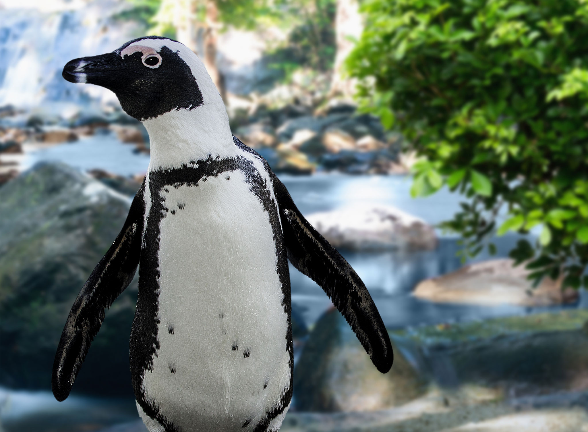
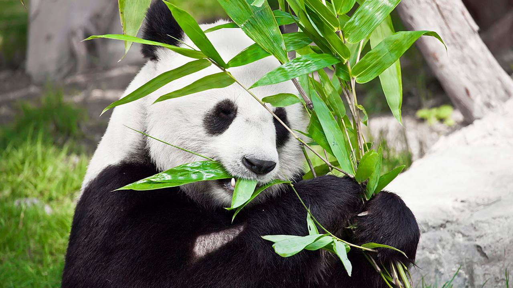
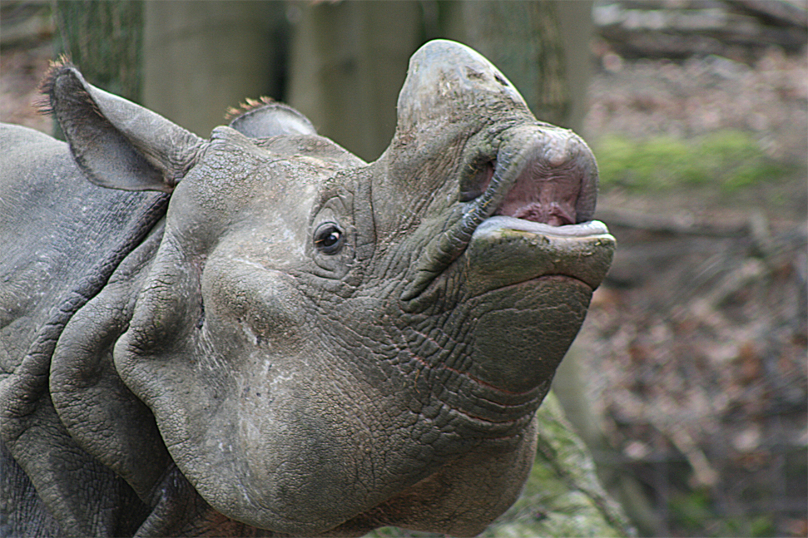
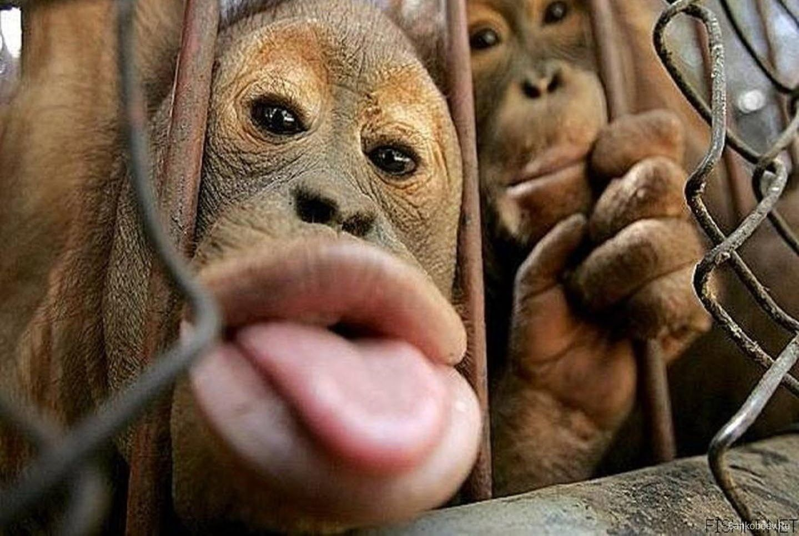
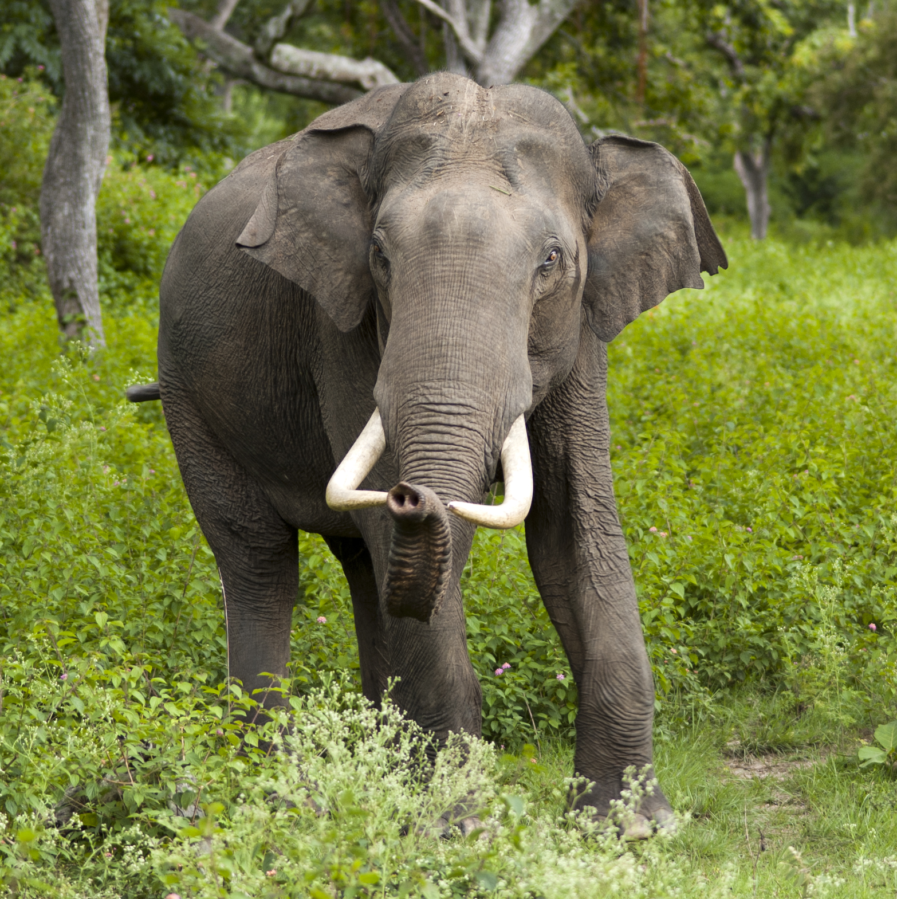
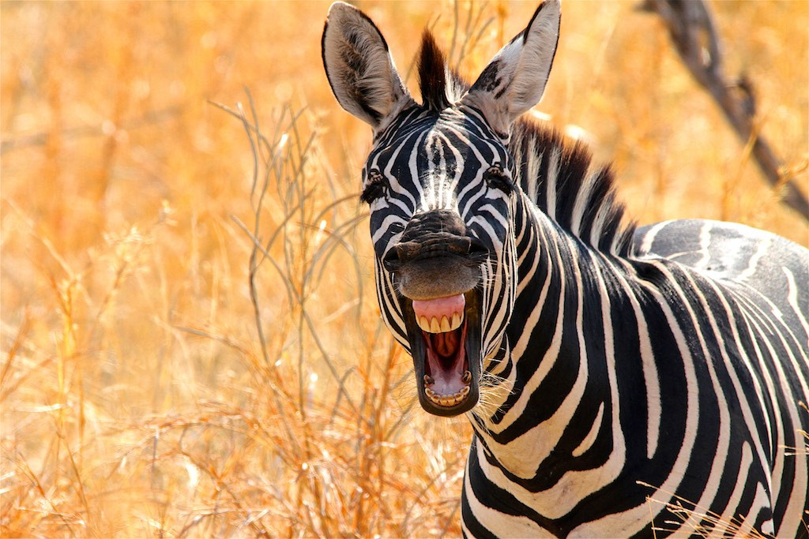
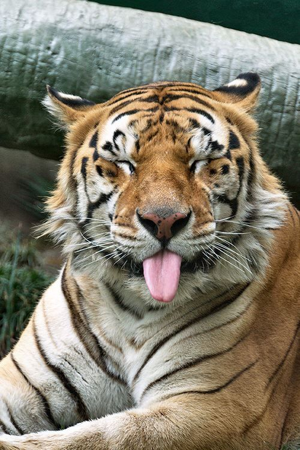

De giraffe is een geslacht van de evenhoevige zoogdieren. Ze hebben een vlekkenpatroon op hun vacht met de kleuren bruin en geel. De giraffe staat bekend om zijn lange nek. Het woord giraffe komt van de Italiaanse woord giraffe. De kop-romplengte van een volwassen giraffe heeft een lengte van 3,5 tot 4,8 meter lang en de staartlengte is van 76 tot 110 centimeter lang. Vrouwtjes worden 3,5 tot 4,7 meter hoog en ze wegen tussen de 400 en 500 kilogram. Mannetjes daarentegen worden 3,9 tot 5,2 meter hoog en ze wegen tussen de 500 en 800 kilogram. De giraffe komt vooral voor in Afrika. Ze zijn echte planteneters en met hun lange nek kunnen ze makkelijk bij de hoogste bomen om daar de blaadjes van te pakken en op te eten.

De pinguïn heeft zijn vleugels als flippers, dus niet om te kunnen vliegen. De pinguïn kan dus goed duiken en zwemmen. Ze zwemmen zo ongeveer 20 kilometer per uur onder water. Een pinguïn is een zeevogel, want een pinguïn legt eieren en zoogdieren leggen geen eieren. Een pinguïn heeft twee lagen met zwart en witte veren. De eerste laag veren is voor de bescherming tegen de kou van de pinguïn en de tweede laag is voor in het koude water om daarin extra bescherming te bieden. De pinguïn leeft op het zuidelijk halfrond, dus Antarctica, Nieuw-Zeeland, Australië, de Galapagoseilanden, Zuid-Afrika en het zuiden van Zuid-Amerika. De vijanden van de pinguïns zijn orka’s, haaien en zeeluipaarden. Pinguïns eten vooral vissen.

De reuzepanda wordt ook wel pandabeer of bamboebeer genoemd. De panda heeft een vacht met wit en zwarte kleur. De panda kan een lichaamslengte bereiken tot ongeveer 150 tot 190 centimeter worden. Mannetjes hebben een gewicht van 85 tot 125 kilo en vrouwtjes hebben een gewicht van ongeveer 70 tot 100 kilo. De panda is een zoogdier en behoort tot de beren. De pandabeer is de meest ergste bedreigde diersoort op de wereld. Een panda gedraagt zich net als een mens. Een panda zou dus niet zomaar iemand kwaad doen, zoals slaan. De panda eet graag planten en dan met name bamboe. Ze wonen in delen van Azië. Doordat de panda een bedreigd diersoort is leven er nog maar 1864 panda’s in het wild en 600 in gevangenschap, dus in dierentuinen. Ze plaatsten panda’s vooral in dierentuinen, omdat ze nageslacht willen produceren. Dit betekent ook wel dat panda’s dan gaan voortplanten met elkaar om nieuwe pandabeertjes te krijgen.

De neushoorn is een landdier en wordt tot wel 60 jaar oud. De witte neushoorn weegt 3000 kilo. De wetenschappelijke naam van neushoorn is Rinoceros dit is een Grieks woord. Rino betekend ook wel neus en cros betekend hoorn. De hoorn is voor veel jagers een populair iets, want het is veel geld waard en daarom hoort de neushoorn tussen de bedreigde diersoorten. De hoorn wordt gebruikt in medicijnen en dan vooral in China. De neushoorn leeft vooral in Azië en Afrika. De neushoorn behoort tot de evenhoevigen. De neushoorn is een planteneter, ze eten het liefst heel veel gras soms eten ze ook wel fruit, maar dit gebeurt alleen als ze in dierentuinen vastzitten.

Op de wereld bestaan er zo ongeveer 220 verschillende soorten apen. Bijna alle soorten apen komen uit het tropisch regenwoud. Ze bevinden zich dus in Midden en Zuid-Amerika, Afrika en Azië. De apen leven in het tropisch regenwoud, omdat het daar lekker vochtig en warm is. In het tropisch regenwoud bevinden natuurlijk hoge bomen, hoger dan wat wij hebben. De apen leven in deze hoge bomen om van boom naar boom te kunnen klimmen. Dit is op zo’n hoogte van 15 tot 30 meter hoog. Wij mensen zijn een afstammeling van de apen en daarom lijken de apen zoveel op ons! Apen kunnen ook heel goed kleuren waarnemen, dit hebben ze zodat ze kunnen zien of de vrucht goed is. Apen krijgen weinig kleine apen, omdat het lang duurt voordat het volgende geboren wordt. De aap wordt meteen met vacht geboren en kan ook al meteen iets stevig vastpakken. De apen eten vooral planten, maar ook vruchten, noten en kruiden. Vinden ze een vogelnestje? Dan eten ze graag de eieren op van dat nestje. De grootste vijand van de aap zijn wij, de mens.

Olifanten zijn grote zoogdieren. Er zijn twee soorten olifanten: de Afrikaanse olifant en de Aziatische olifant. De olifanten komen uit Afrika ten zuiden van de Sahara en in het zuiden en zuidoosten van Azië. De mannelijke Afrikaanse olifant hebben een hoogte van 4 meter en wegen tot 7000 kilogram. Ze gebruiken hun slurf voor veel dingen, zoals het grijpen van voorwerpen. Hun snijtanden ook wel slagtanden gebruiken ze voor het verplaatsen van objecten, het graven en als wapen tijdens gevechten. Het grote oor flappen van een olifant gebruiken ze om de temperatuur van het lichaam te beheersen.

Zebra’s zijn de familie van de paarden en ezels en behoort tot de eenhoevige familie. De zebra leeft in Afrika. De zebra eet vooral planten, zoals oud hoog gras en bladeren van de bomen. Een zebra kan 2 dagen zonder water. Omdat de zebra altijd in een groep leeft zijn het daarom kuddedieren een groep bestaat zo ongeveer uit 15 zebra’s. In een groep zie je vaak agressief gedrag, ze doen dit om te laten zien wie de baas in de groep. De grootste vijand van de zebra is de leeuw, omdat de leeuw een vleeseter is. Een zebra rent zo ongeveer 60 kilometer per uur. Zijn strepen zorgen voor een camouflage.

De tijger heeft een oranje vacht met zwarte strepen zijn kop, borst en buik zijn wit. De tijger behoort tot de carnivoren, dit betekent dat de tijger vlees eet. Dit valt ook te zien aan zijn gebit. Zijn gebit bestaat namelijk uit hoektanden, snijtanden en knipkiezen. De tijger heeft de langste hoektanden van de katachtigen. De hoektanden van de tijger zijn tussen de 7,5 en 10 centimeter lang. De tijgers leven vooral in Azië. De vrouwtjes Armoe tijger weegt tussen de 110 en 170 kilo en een mannetjes Armoe tijger weegt tussen de190 en 400 kilo. Een tijger kan wel 40 kilo vlees naar binnenwerken. Alle tijgers die er bestaan worden bedreigd. De populatie van de Armoe tijger is tussen de 2.000 en 3.000 en het gaat steeds meer achteruit. Ze zijn een bedreigde diersoort, omdat veel delen van de tijger worden gebruikt voor medicijnen.